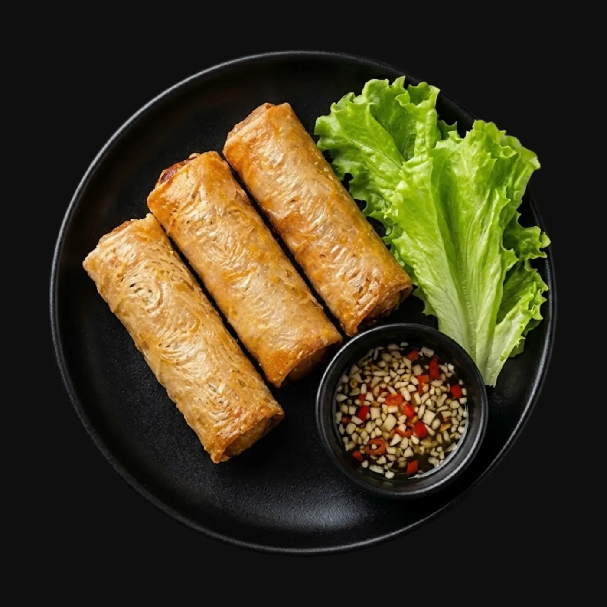

7,90 €
Sweet & Sour Spring Rolls
Three crisp spring rolls with sweet and sour dipping sauce.
Allergens 1,4,10
Details ↗Lively market energy, handwritten signs, hot pans and classic Saigon street food.
Background photo: Jean-Marie Hullot · CC BY 3.0